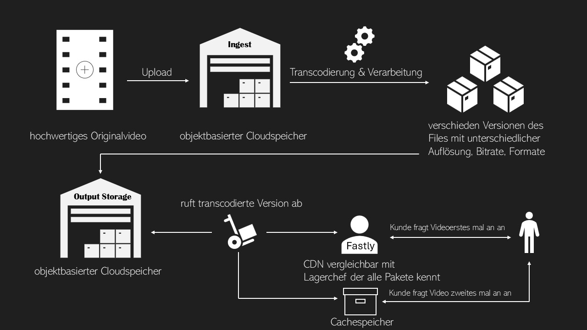
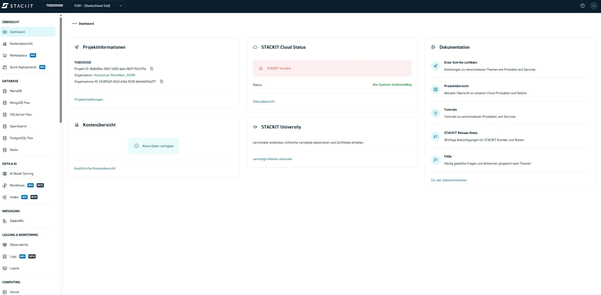

Einleitung
Video-on-Demand-Systeme (VoD) sind aus dem heutigen Medienalltag nicht mehr wegzudenken. Plattformen wie YouTube, Netflix oder die Mediatheken von ARD und ZDF zeigen, wie selbstverständlich audiovisuelle Inhalte jederzeit und auf unterschiedlichsten Endgeräten verfügbar sind. Hinter dieser scheinbaren Selbstverständlichkeit verbirgt sich jedoch ein komplexer technischer Workflow aus Speicherung, Verarbeitung und Verteilung von Medieninhalten.
Der Aufbau eines VoD-Systems in der Cloud ist in den letzten Jahren deutlich vereinfacht worden. Moderne Cloud-Plattformen stellen skalierbare Infrastrukturen bereit, mit denen große Mediendaten effizient ingestiert, gespeichert, transcodiert und ausgeliefert werden können. In diesem Praktikum wird dieser Workflow praxisnah nachvollzogen – jedoch bewusst nicht mit proprietären Komplettlösungen eines einzelnen Hyperscalers.
Stattdessen liegt der Fokus auf einem herstellerneutralen Ansatz unter Verwendung der europäischen Cloud-Plattform STACKIT in Kombination mit dem Content Delivery Network Fastly. Dadurch wird nicht nur ein realistischer und übertragbarer VoD-Workflow vermittelt, sondern auch ein Bewusstsein für Themen wie digitale Souveränität, Datenhoheit und den Einsatz europäischer Cloud-Infrastrukturen geschaffen.
Einfaches Beispiel
Ein Video-on-Demand-Workflow lässt sich gut mit einem modernen Paketversand vergleichen. Zunächst wird ein hochwertiges Originalvideo in das System hochgeladen und sicher gespeichert – vergleichbar mit der Abgabe eines Pakets in einem zentralen Lager. Dieses Original dient als Ausgangspunkt für alle weiteren Verarbeitungsschritte.
Da unterschiedliche Endgeräte unterschiedliche Anforderungen haben, wird das Video anschließend in mehrere optimierte Versionen umgewandelt. Ähnlich wie ein Paket je nach Empfänger neu verpackt wird, entstehen so verschiedene Videoformate für Smartphones, Tablets oder große Bildschirme. Dadurch kann sichergestellt werden, dass Inhalte unabhängig von Gerät und Netzwerkbedingungen effizient und in gleichbleibender Qualität ausgeliefert werden.
Um eine schnelle und zuverlässige Bereitstellung für viele Nutzer gleichzeitig zu ermöglichen, werden diese Videoversionen schließlich über ein Content Delivery Network möglichst nah an die Nutzer verteilt. Dies reduziert Ladezeiten, entlastet zentrale Server und verbessert die Nutzererfahrung.
Der Nutzer selbst erhält das Video über einen Browser oder Mediaplayer, ohne die zugrunde liegende Infrastruktur wahrzunehmen – für ihn zählt lediglich, dass die Wiedergabe schnell, stabil und ohne Unterbrechungen startet.

Fastly als Content Delivery Network
Fastly wird in diesem Versuch als Content Delivery Network (CDN) eingesetzt und übernimmt die performante Auslieferung der transcodierten Medieninhalte an die Endnutzer. Ein CDN besteht aus einer Vielzahl weltweit verteilter Server, die Inhalte möglichst nah am jeweiligen Nutzer bereitstellen.
Im vorliegenden Workflow dient der STACKIT Object Storage als sogenannte Origin-Quelle. Fastly greift bei der ersten Anfrage auf die dort abgelegten Medieninhalte zu und speichert diese temporär in seinem Cache. Nachfolgende Anfragen können direkt von einem nahegelegenen Edge-Server bedient werden, ohne erneut auf den Origin-Speicher zugreifen zu müssen.
Dieser Ansatz entlastet den Ursprungsspeicher, verbessert die Skalierbarkeit des Systems und sorgt für eine stabile Nutzererfahrung.
Workflow
Unabhängig vom eingesetzten Cloud-Anbieter folgt der Distributionsweg von Video-on-Demand-Systemen in der Regel einem ähnlichen Grundprinzip. Zunächst werden hochwertige Quelldateien in das System ingestiert und in einem nicht öffentlich zugänglichen Speicher abgelegt.
Abhängig vom vorgesehenen Distributionsweg werden diese Quelldateien anschließend in verschiedene Zielformate transcodiert, um eine optimale Wiedergabe auf unterschiedlichen Endgeräten und Netzwerkbedingungen zu ermöglichen.
Nach Abschluss der Transcodierung werden die Medieninhalte über ein Content Delivery Network (CDN) verteilt, das eine performante und skalierbare Auslieferung an eine große Anzahl von Nutzern ermöglicht.
In der Praxis wird dieser Ablauf durch Monitoring-, Automatisierungs- und Benachrichtigungsmechanismen ergänzt.
Cloud-Anbieter
Cloud-Anbieter stellen Rechen-, Speicher- und Netzwerkressourcen über das Internet bereit. Anstatt eigene Hardware zu betreiben, nutzt der Anwender diese Ressourcen bedarfsgerecht und zeitlich begrenzt.
Die angebotenen Dienste lassen sich grob in drei Kategorien einteilen:
Infrastructure as a Service (IaaS)
Bereitstellung grundlegender Infrastruktur wie virtuelle Maschinen, Netzwerke und
Speicher.
Platform as a Service (PaaS)
Bereitstellung abstrahierter Plattformdienste wie Object Storage oder
Container-Orchestrierung.
Software as a Service (SaaS)
Bereitstellung vollständig betriebener Anwendungen[^1].
ℹ️ Für die folgenden Versuche werden Dienste der STACKIT-Cloud für Speicherung, Verarbeitung und Monitoring sowie das Content Delivery Network (CDN) von Fastly verwendet.
Weboberfläche
Cloud-Produkte lassen sich in der Regel über eine grafische Weboberfläche verwalten. Bei STACKIT erfolgt der Zugriff über das STACKIT Portal.

Kommandozeile
Neben der grafischen Oberfläche können Cloud-Ressourcen auch mithilfe von Kommandozeilenwerkzeugen (CLI) und Skripten verwaltet werden.